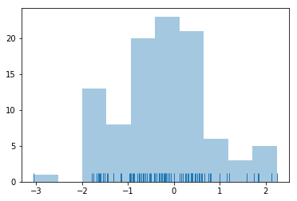
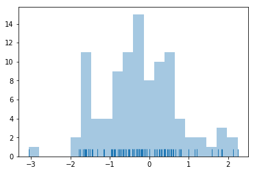
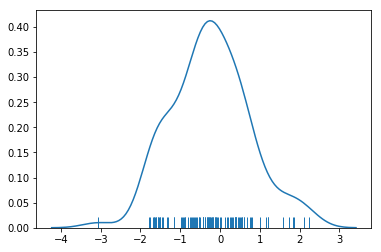
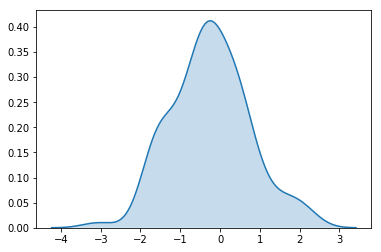
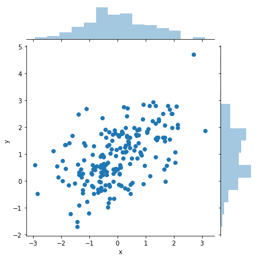
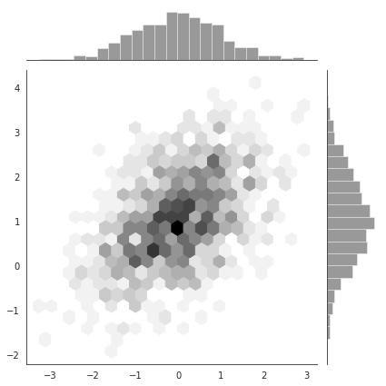
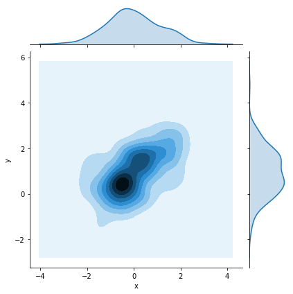
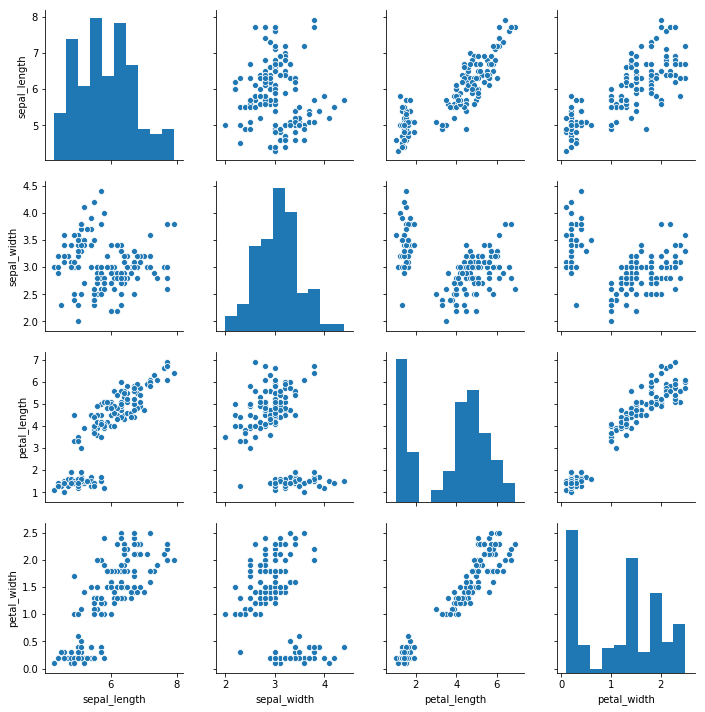

可视化数据集的分布
1 | import numpy as np |
单变量分布
displot()函数将绘制直方图，并拟合核密度函数(KDE)
x=np.random.normal(size=100)
sns.distplot(x)
1 | #去除kde |
<matplotlib.axes._subplots.AxesSubplot at 0x1a21577f60>

1 | #箱子划分有多细，Seaborn会默认猜测一个，但是更好的应该由我们来指定 |
<matplotlib.axes._subplots.AxesSubplot at 0x1a215fdbe0>

核密度函数
The kernel density estimate may be less familiar, but it can be a useful tool for plotting the shape of a distribution. Like the histogram, the KDE plots encode the density of observations on one axis with height along the other axis:
简单理解为展示密度
1 | sns.distplot(x,hist=False,rug=True) |
<matplotlib.axes._subplots.AxesSubplot at 0x1a216fada0>

1 | sns.kdeplot(x,shade=True) |
<matplotlib.axes._subplots.AxesSubplot at 0x1a2181cd68>

双变量分布
It can also be useful to visualize a bivariate distribution of two variables. The easiest way to do this in seaborn is to just use the jointplot() function, which creates a multi-panel figure that shows both the bivariate (or joint) relationship between two variables along with the univariate (or marginal) distribution of each on separate axes.
1 | mean, cov = [0, 1], [(1, .5), (.5, 1)] |
| x | y | |
|---|---|---|
| 0 | 1.620467 | 2.511505 |
| 1 | -0.529253 | 0.247477 |
| 2 | -1.361914 | 0.225665 |
| 3 | -1.188358 | 0.785273 |
| 4 | 1.158663 | 0.180673 |
1 | sns.jointplot(x='x',y='y',data=df) |
<seaborn.axisgrid.JointGrid at 0x1a21b3a668>

1 | x, y = np.random.multivariate_normal(mean, cov, 1000).T |

Kernel density estimation
这个和单变量分布的核密度函数差不多
1 | sns.jointplot(x='x',y='y',kind='kde',data=df) |
<seaborn.axisgrid.JointGrid at 0x1a21c534a8>

可视化数据集中的成对关系
这个没太看明白、、、
1 | iris = sns.load_dataset("iris") |

1 | g = sns.PairGrid(iris) |